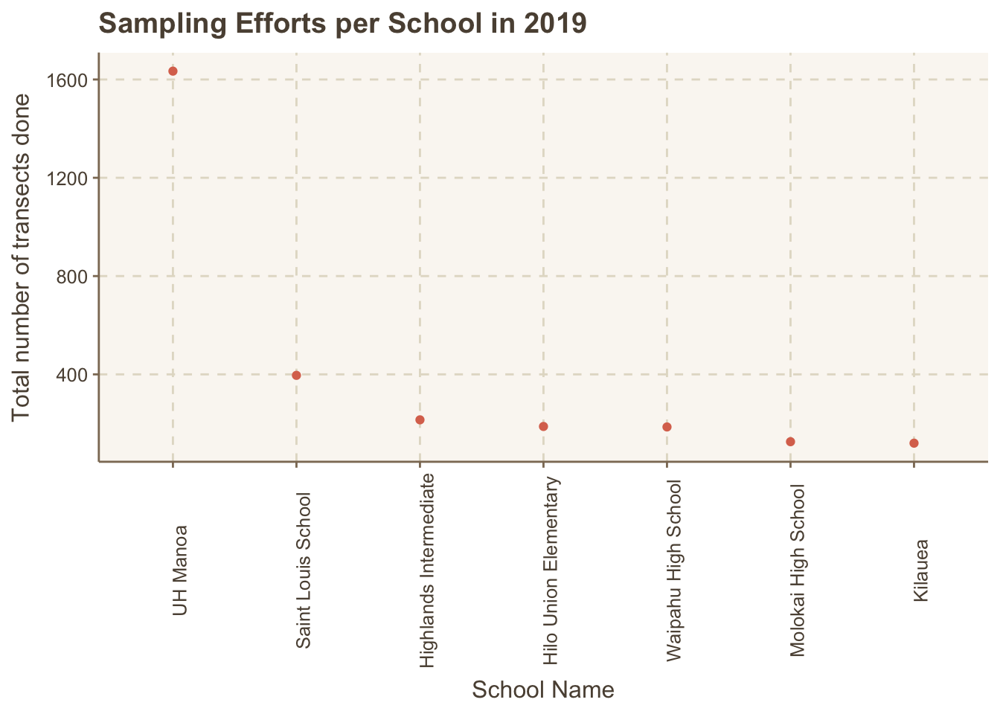

show my hard work
#load libraries
library(tidyverse)
library(here)
library(janitor)
library(lubridate)
library(readr)
library(stringr)
library(purrr)
library(ggthemr)#load libraries
library(tidyverse)
library(here)
library(janitor)
library(lubridate)
library(readr)
library(stringr)
library(purrr)
library(ggthemr)#save functions
#plotting function
opihiplot <- function(data, x, y, z) {
ggplot(data, aes(x={{x}}, y={{y}}, color={{z}})) +
geom_point()
}#import cleaned master file of all data
opihi_master <- read.csv(here("Kat","OPIHI_Project","Data","mai_mei_nick_kat_combined_years","2026-11-08_final_output_dataframe.csv"))#make some summary statistics of the dataset aimed at this research question
#| label: tbl-planets
#| tbl-cap: Astronomical object
opihi_summary <- opihi_master |>
mutate(calc_year=year(date)) |>
group_by(calc_year) |>
count(name_of_school)See ?@tbl-planets
To answer this research question, we attempted to evaluate sampling consistency per school by looking at the total number of transects done each year. If schools/teams are more consistently going to the field and running transects, they may be improving over time at coordinating these field trips and field protocols even if the students doing the transects are different per field trip. Although we thought about looking at sampling efforts as the number of field trips conducted per school each year, the amount of sampling effort expended on each field differed based on the day and the number of students there at the time. Therefore, we went with the total number of transects run as a hopefully better metric of sampling effort.
#plot
ggthemr("dust") #change plot theme
#plot only a subset of data (2019) to do a better comparison of schools, also subsetted to the top 7 schools that did the most sampling for a cleaner looking plot
opihi_2019 <- opihi_summary |>
filter(calc_year=="2019",
n>99)
#set levels to the schools so that the data goes from most number of transects to least
opihi_2019[2] <- factor(opihi_2019$name_of_school, levels=c("UH Manoa","Saint Louis School","Highlands Intermediate","Hilo Union Elementary","Waipahu High School","Molokai High School","Kilauea"))
#use plotting function to plot data
opihiplot(opihi_2019, name_of_school, n) +
theme(axis.text.x = element_text(angle = 90)) +
labs(
title = "Sampling Efforts per School in 2019",
x="School Name",
y="Total number of transects done"
) 
ggsave(here("Outputs","Consistencyplot.png"))For the following plot, we decided to subset the survey efforts from 2019 only to focus on a year that had a larger range of schools participating with more consistent field trips. Here, UH Manoa has by far the greatest number of transects done with over 1600 in 2019, followed by Saint Louis High School at 396 and Highlands Intermediate with 215. Based on this, we could infer that UH Manoa may be a “better” team in terms of sampling consistency, which could translate to having a more established OPIHI Project presence and protocol compared to other schools that did not have as high of a sampling effort (shown here as the number of transects completed in 2019).